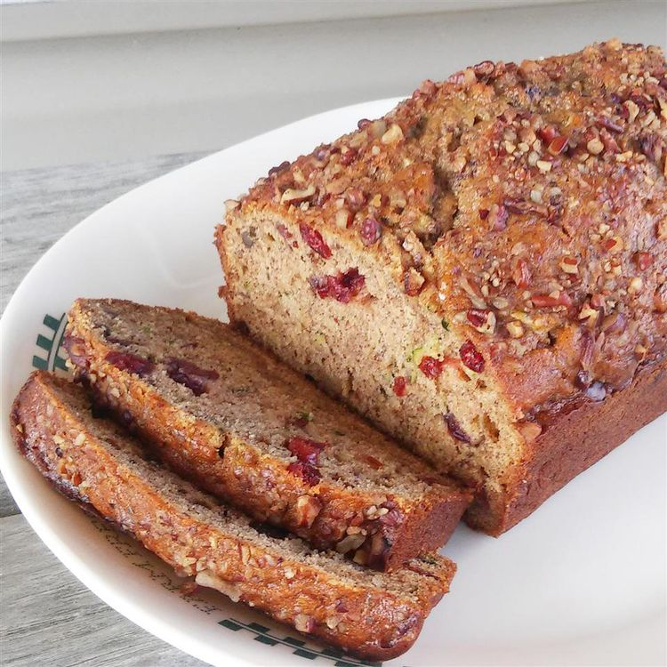

Banana Bread

Ingredients
- 3 eggs
- 3/4 cup vegetable oil
- 1 cup white sugar
- 1 cup grated zucchini
- 2 bananas, mashed
- 2 teaspoons vanilla extract
- 3 1/2 cups all-purpose flour
- 1 tablespoon ground cinnamon
- 1 1/2 teaspoons baking powder
- 1 teaspoon baking soda
- 1 teaspoon salt
- 1/2 cup dried cranberries
- 1/2 cup chopped walnuts
Steps
- Preheat the oven to 325 degrees F (165 degrees C). Grease and flour two 8x4-inch bread loaf pans.
- Beat eggs in a large bowl with an electric mixer until light yellow and frothy. Add oil, white sugar, grated zucchini, bananas, brown sugar, and vanilla; beat until well combined. Stir in flour, cinnamon, baking powder, baking soda, and salt. Fold in cranberries and nuts. Divide batter evenly between prepared loaf pans.
- MakBake in the preheated oven until a toothpick inserted in the center comes out clean, about 45 to 50 minutes. Allow to cool in the loaf pans on a wire rack before removing and serving.